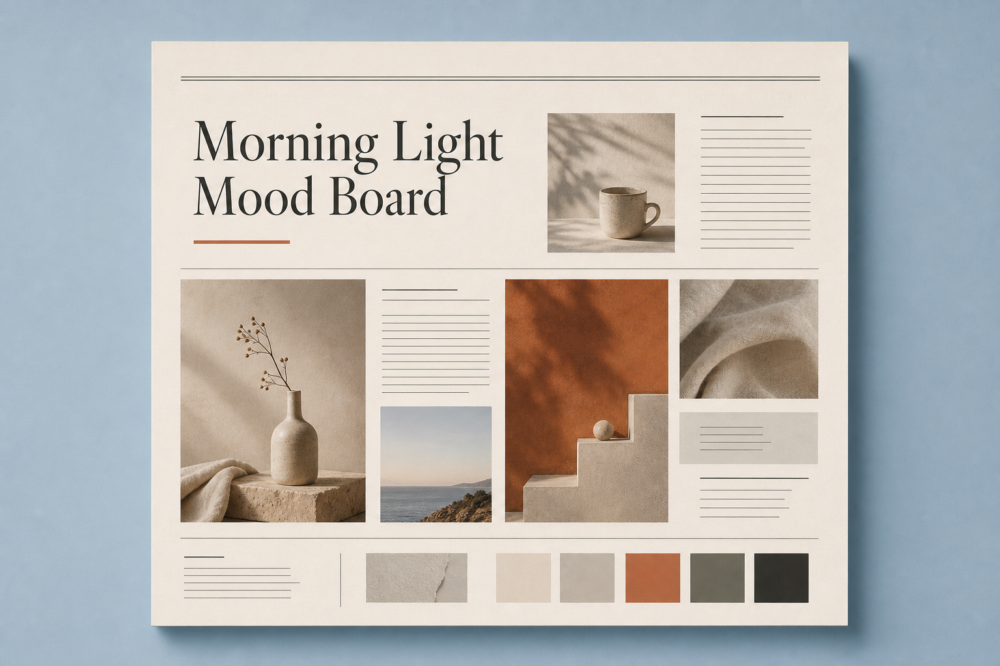

National Geographic · Outside
Place before spectacle
Wide breath, honest color, subjects that belong to a location.
Kindred: local mornings over dramatic conflict imagery.
Not a news app. A calm morning ritual — the feeling of a newspaper on a quiet porch, or walking the Arboretum just after sunrise.

Blue is atmosphere, never branding neon. Paper is the object in your hands. Accent is a single warm decision — like terracotta clay in soft light.
Premium type feels decided. Few sizes. Clear roles. Georgia carries Kindred’s humanity — the same reason Kinfolk and classic newspaper nameplates trust serifs.
Nat Geo and Outside earn trust by respecting place. Kindred photos should feel found, not staged for clicks — morning light, real streets, parks, markets, weather you can feel.
Wide breath, honest color, subjects that belong to a location.
Empty space is content. Objects rest. Nothing shouts.
Restraint signals judgment. Cropping and selection are editorial acts.
Community, craft, nature, and civic life treated with dignity.
Monocle and TIME feel expensive because they leave room to think. Cramped layouts feel like feeds. Kindred chooses the porch, not the subway ad.
Apple teaches calm systems. Muji teaches subtraction. Aesop teaches material honesty. Kindred borrows their discipline, not their look.
Sticky identity in sky-wash. Wordmark tracked small. Actions italic and quiet.
Page color on sky. Hairline borders. Shadow only when something truly lifts.
Primary accent is rare. Most actions are italic terracotta text — like a magazine cue.
When needed: thin line, monochrome, utilitarian (maps, time). Never emoji, never badges.
Matte surfaces. Soft elevation like a sheet resting on a table. No glow, no glassmorphism.
Illustration only if hand-made and local — never stock vector cities or mascot spam.
Fade and slight rise. 400–600ms. No springs, no parallax circus, no story-stack swipes.
Spring green in positive, warmer accent in autumn, cooler sky in winter mornings.
TIME teaches cover authority. Kinfolk teaches lingering. Kindred teaches a short, complete ritual that ends so real life can begin.
Premium is not decoration. It is confidence, restraint, and respect for the reader’s time.
One idea can lead. Hierarchy is courage.
White space as hospitality. Domestic beauty without kitsch.
Dense knowledge, elegant packaging — never messy.
Curiosity about the living world and culture.
One primary action. Hardware-software calm.
Fewer things, better things. Texture over trend.
“Does this lower stress?” If not, simplify it. Kindred is an emotional experience before it is a product.